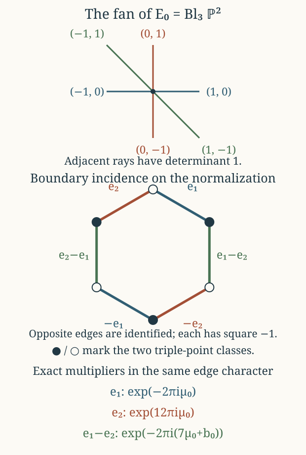
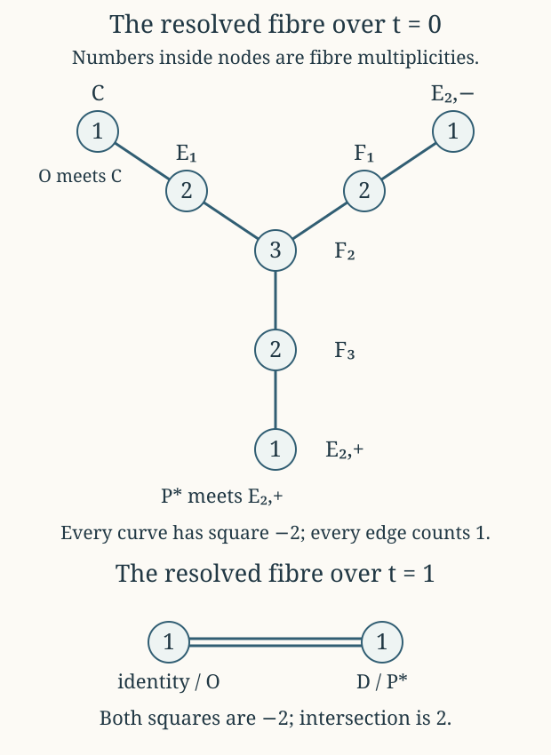

The cusp and the compact threefold
CG-S6 · Lesson 5
We now extend the family across its remaining puncture. Every term of the period matrix contributes to the extension. In particular, the units multiplying the toric translations determine the actual identifications on the non-normal central fibre. We construct the charts, prove separation and properness, identify every overlap map, and then glue the three fillings to the middle family.
The notation \((\tau,\mu,\beta)\), the ordered lattice \(\Lambda\), and the matrices \(A_1,A_2\) are those of lessons 1–4. The global parameter satisfies the exact strict inequality in lesson 4, Theorem 5.1. Sections 9–13 complete the resolved elliptic-surface comparison: they identify the specified section, prove the extension of translation, and calculate the full line-bundle lift.
1. Every cusp period and every unit
Use the actual base coordinate \(t_c=1/t\) at \(p_0\). By lesson 4,
\[ q=e^{2\pi i\tau}=t_cu_1(t_c),\qquad u_1(0)=1/1728. \tag{1.1} \]
On a sufficiently small full disc, choose a holomorphic logarithm of the nonvanishing function \(u_1\), and put
\[ h=\frac{\log u_1}{2\pi i},\qquad s=\tau-h,\qquad b=\beta+\tau. \tag{1.2} \]
Here \(\mu,b,h\) are holomorphic in \(t_c\), and \(e^{2\pi is}=t_c\), \(s(g_0z)=s(z)-1\). With the original column order,
\[ \begin{gathered} B_0=\begin{pmatrix}0&1\\-1&0\end{pmatrix},\qquad C(t_c)= \begin{pmatrix}6\mu(t_c)&h(t_c)\\b(t_c)-h(t_c)&\mu(t_c)\end{pmatrix},\\ Z=\begin{pmatrix}6\mu&\tau\\\beta&\mu\end{pmatrix} =sB_0+C(t_c),\qquad \Pi=[Z\mid I_2]. \end{gathered} \tag{1.3} \]
Thus for each \(\bar\lambda\in\mathbb Z^2\) the exact exponential of its two nonintegral periods is
\[ \exp(2\pi iZ\bar\lambda) =t_c^{B_0\bar\lambda}c_{\bar\lambda}(t_c),\qquad c_{\bar\lambda}(t_c)=\exp(2\pi iC(t_c)\bar\lambda). \tag{1.4} \]
Vector exponentials and powers in (1.4) are coordinatewise. Both entries of \(c_{\bar\lambda}\) are holomorphic units. Formula (1.3) is an equality of the original matrices; \(C\), including its two entries involving \(h\), remains in every subsequent map.
2. The infinite collection of smooth charts
In \(\mathbb R^2\) take all triangles
\[ L_v=(v,v+e_1,v+e_2),\qquad U_v=(v+e_1,v+e_2,v+e_1+e_2),\qquad v\in\mathbb Z^2. \tag{2.1} \]
They tile the plane along their faces. Put \(N'=\mathbb Z^2\oplus\mathbb Z\). For each triangle \(\sigma=(v_0,v_1,v_2)\), let \(\widehat\sigma\) be the cone generated by \((v_0,1),(v_1,1),(v_2,1)\). Also include their faces and the zero cone. The ordered determinants for \(L_v,U_v\) are \(+1,-1\), respectively: subtracting the first column from the other two removes \(v\), and the remaining two-dimensional determinants are \(1,-1\).
Let \(M'=\operatorname{Hom}(N',\mathbb Z)\). The dual integral basis \(m_0,m_1,m_2\) defines a chart
\[ Y_\sigma=\mathbb C^3,\qquad z_i=\chi^{m_i}. \tag{2.2} \]
A character \(\chi^{(a_1,a_2,a_3)}\) is the monomial \(x_1^{a_1}x_2^{a_2}t_c^{a_3}\) on the common torus \((\mathbb C^*)^3\). Charts are identified wherever these monomials and their inverses are regular for both cones. In particular, intersection along a common face \(\upsilon\) gives the ring \(\mathbb C[\upsilon^\vee\cap M']\). Because the cones meet along faces, these identifications satisfy the cocycle law on triple intersections: they are all the identity on the same character field.
The height character \((0,0,1)\) is \(m_0+m_1+m_2\), so on every chart
\[ t_c=z_0z_1z_2. \tag{2.3} \]
Lemma 2.1. These charts give a connected Hausdorff smooth complex threefold \(Y\) with a countable basis. The dense torus is \((\mathbb C^*)^3\), and \(t_c\) is a global holomorphic function.
Proof. Smoothness follows from the integral-basis calculation. We prove the separation assertion explicitly, since the fan is infinite. For two cones \(\kappa,\kappa'\) with common face \(\upsilon\), choose an integral linear functional \(m\) nonnegative on \(\kappa\), nonpositive on \(\kappa'\), and zero on each precisely on \(\upsilon\). Such a functional comes from separating the two rational triangles in the height-one plane. If disjoint, compact convex separation is strict; if they share an edge or a vertex, take a supporting line through that face and perturb within its supporting directions until all other vertices have strict signs. The triangles meet precisely in that face, so such a perturbation exists. Choose rational coefficients within the resulting open inequalities and multiply by a common denominator.
For \(a\in\upsilon^\vee\cap M'\), add a sufficiently large nonnegative integral multiple \(km\). It stays nonnegative on the common face and becomes nonnegative on all other rays of \(\kappa\). Hence
\[ a=(a+km)+(-km),\qquad a+km\in\kappa^\vee\cap M',\quad -km\in{\kappa'}^\vee\cap M'. \tag{2.4} \]
Conversely a sum of these two kinds is nonnegative on their common face. Thus the map
\[ \mathbb C[\kappa^\vee\cap M']\otimes \mathbb C[{\kappa'}^\vee\cap M'] \longrightarrow\mathbb C[\upsilon^\vee\cap M'], \qquad \chi^a\otimes\chi^b\longmapsto\chi^{a+b} \tag{2.5} \]
is surjective. It says that the graph of the chart identification is closed in the product of the two affine charts, as the zero set of the relations in its kernel. Therefore the diagonal of \(Y\) is closed on every product of chart neighbourhoods, which proves that \(Y\) is Hausdorff. There are countably many charts, each with a countable basis; their union has a countable basis. Every chart contains the same torus as a dense connected open subset. Their union is consequently connected. Formula (2.3) proves the last assertion. ∎
The central divisor is \(\sum_{v\in\mathbb Z^2}E_v\), each with multiplicity one, where \(E_v\) corresponds to the ray \((v,1)\). Its local equations are a coordinate, a product of two coordinates, or \(z_0z_1z_2\), depending on how many central components meet the point. A product of distinct coordinates generates a radical ideal: a convergent series divisible by each coordinate is divisible by their product. Thus the scheme-theoretic fibre is reduced.
At \(E_0\) the six rays in the quotient lattice are
\[ e_1,\ e_2,\ e_2-e_1,\ -e_1,\ -e_2,\ e_1-e_2. \tag{2.6} \]
The alternating three \(e_1,e_2-e_1,-e_2\) form the fan of \(\mathbb P^2\); inserting the sum of each adjacent pair gives exactly (2.6). On an affine chart, inserting the sum of the two coordinate rays gives the two charts of the blow-up of its coordinate origin: \((u,v/u)\) and \((u/v,v)\). Consequently \(E_0\) is \(\mathbb P^2\) blown up at its three torus-fixed points. This is the hexagonal surface customarily denoted \(\mathrm{dP}_6\). All other \(E_v\) have the same charts after translating the vertex labels.
3. Extending the full period action
For \(\bar\lambda\in\mathbb Z^2\), the integral automorphism
\[ \varphi_{\bar\lambda}(y,y_3) =(y+y_3B_0\bar\lambda,y_3) \tag{3.1} \]
sends each height-one triangle to its translate by \(B_0\bar\lambda\). It therefore defines a holomorphic automorphism \(\Phi_{\bar\lambda}\) of \(Y\). On the torus it is
\[ \Phi_{\bar\lambda}(x,t_c)=(t_c^{B_0\bar\lambda}x,t_c). \tag{3.2} \]
Its monomials may have negative exponents in this torus presentation. Their extension is the chart map determined by (3.1), which sends a basis of the source cone to a basis of the target cone; no meromorphic formula is being evaluated at a zero coordinate.
Multiplication by \((c_{\bar\lambda}(t_c),1)\) is also holomorphic on every chart over a small full cusp disc. Each chart character is multiplied by a product of integral powers of these units, hence by a holomorphic nonzero function. Define
\[ \Psi_{\bar\lambda} =(c_{\bar\lambda}(t_c),1)\cdot\Phi_{\bar\lambda}. \tag{3.3} \]
The shear (3.1) fixes the first two cocharacter directions and preserves \(t_c\), so it commutes with this multiplication. Also
\[ c_{\bar\lambda}c_{\bar\nu} =c_{\bar\lambda+\bar\nu}. \tag{3.4} \]
Thus \(\Psi_{\bar\lambda}\Psi_{\bar\nu}=\Psi_{\bar\lambda+\bar\nu}\) on the entire model, not only on its dense torus.
Choose \(r_1\) with \(0<r_1<1\) such that \(C\) is holomorphic on a neighbourhood of \(|t_c|\le r_1\). Using the Euclidean operator norm, define
\[ R(t_c)=-2\pi\operatorname{Im}C(t_c),\qquad M_C=\max_{|t_c|\le r_1}\|R(t_c)\|,\qquad 0<\epsilon<r_1,\quad |\log\epsilon|>2M_C. \tag{3.5} \]
Let \(Y_\epsilon=\{|t_c|<\epsilon\}\).
Theorem 3.1. The action (3.3) on \(Y_\epsilon\) is free and properly discontinuous. Its quotient \(N_0\) is a connected Hausdorff smooth complex threefold.
Proof. At a torus fixed point, taking logarithmic absolute values in (1.4) would give
\[ \log|t_c|\,B_0\bar\lambda+R(t_c)\bar\lambda=0. \tag{3.6} \]
But \(|B_0\bar\lambda|=|\bar\lambda|\), whereas the norm of the second term is at most \(M_C|\bar\lambda|\). Inequality (3.5) excludes (3.6) for \(\bar\lambda\ne0\). At the central fibre, an orbit is labelled by a bounded triangle, edge or vertex, and \(\Psi_{\bar\lambda}\) translates that cell by \(B_0\bar\lambda\). A bounded nonempty set cannot be invariant under a nonzero translation: iteration would make it unbounded. This proves freeness also on the boundary.
We need bounded chart control to prove proper discontinuity. Let \(\theta_i^\sigma(y)\) be the affine barycentric coordinates of a triangle, and set
\[ \sigma^{(\eta)}=\{y:\theta_i^\sigma(y)>-\eta\text{ for all }i\},\qquad \mathcal U_\sigma(S)=\{|z_i|<S\text{ for all }i\}. \tag{3.7} \]
For a torus point put
\[ y(p)=\frac{(\log|x_1|,\log|x_2|)}{\log|t_c|}. \tag{3.8} \]
Pairing the dual bases with \((y,1)\) gives the exact equalities and inequalities
\[ \log|z_i|=\log|t_c|\theta_i^\sigma(y),\qquad p\in\mathcal U_\sigma(S) \ \Longleftrightarrow\ y(p)\in\sigma^{(\log S/|\log|t_c||)}. \tag{3.9} \]
In particular, \(|z_i|\le1\) for all \(i\) is equivalent to \(y\in\sigma\), with all triangle edges retained.
These closed unit polydiscs cover the part of \(Y\) with \(|t_c|<1\). On the torus this follows by choosing a triangle containing \(y\). For a boundary point on the orbit of a cell \(P\), use the quotient lattice by \(\operatorname{span}\widehat P\). The remaining nonzero chart coordinates give its logarithmic absolute values there. The cones of triangles containing \(P\), after passage to the quotient, cover that whole real quotient space: start at an interior point of \(P\), perturb it a small distance in a chosen lifted direction, and locate the nearby point in the locally finite triangulation. The triangle so obtained contains \(P\). The same dual-coordinate inequalities therefore put the boundary point in one of its closed unit polydiscs. In particular the open sets \(\mathcal U_\sigma(2)\cap Y_\epsilon\) cover \(Y_\epsilon\), and a compact set lies in finitely many of them.
The full action on logarithmic positions is
\[ y(\Psi_{\bar\lambda}p)=y(p)+B_{t_c}\bar\lambda,\qquad B_{t_c}=B_0+\frac{R(t_c)}{\log|t_c|}. \tag{3.10} \]
From (3.5),
\[ \|B_{t_c}-B_0\|<\tfrac12,\qquad |B_{t_c}\bar\lambda|\ge\tfrac12|\bar\lambda|. \tag{3.11} \]
Fix two of the radius-two charts. If one translate of the first meets the second, that open intersection contains a torus point, since the torus is dense and invariant. Equation (3.9) places its initial and final positions in the bounded sets \(\sigma^{(\eta_0)}\) and \({\sigma'}^{(\eta_0)}\), where \(\eta_0=\log2/|\log\epsilon|\). Thus
\[ \tfrac12|\bar\lambda| \le \sup_{a\in{\sigma'}^{(\eta_0)},\,b\in\sigma^{(\eta_0)}}|a-b|. \tag{3.12} \]
Only finitely many lattice vectors satisfy this bound. Taking finitely many pairs of charts proves the same assertion for any two compact subsets. This is proper discontinuity.
For a free properly discontinuous action, choose a relatively compact small coordinate neighbourhood and exclude the finitely many nontrivial translates that can meet its closure. Shrinking around its point makes all these translates disjoint, since the action is free. Its projection is therefore a coordinate chart of the quotient. Proper discontinuity also separates distinct orbits by disjoint projected neighbourhoods, giving Hausdorffness; the countable chart basis descends. Finally the restriction of each maximal chart is \(\{|z_0z_1z_2|<\epsilon\}\), which is star shaped about the origin. These connected sets meet the common connected torus over \(0<|t_c|<\epsilon\). Their union and its quotient are connected. ∎
4. Properness, with representatives on every boundary stratum
Theorem 4.1. The induced map \(f_0:N_0\to\Delta_\epsilon\) is proper.
Proof. Fix \(0<\epsilon_1<\epsilon\). Let \(\mathcal F_0\) be the finite set of triangles meeting the closed Euclidean ball of radius \(\sqrt2\). Define the compact subset of the already Hausdorff space \(Y\)
\[ K_0=\bigcup_{\sigma\in\mathcal F_0} \left(\{|z_0|,|z_1|,|z_2|\le1\}\cap\{|t_c|\le\epsilon_1\}\right). \tag{4.1} \]
For a torus point \(p\), put \(u=B_{t_c}^{-1}y(p)\), and choose \(\bar\lambda\in\mathbb Z^2\) with \(|u+\bar\lambda|_\infty\le1/2\). Since \(\|B_{t_c}\|\le3/2\),
\[ |y(\Psi_{\bar\lambda}p)| \le\frac32\frac{\sqrt2}{2} =\frac{3}{2\sqrt2}<\sqrt2. \tag{4.2} \]
Take a triangle containing this position. Equation (3.9), including its non-strict unit-polydisc form, puts the translated point in \(K_0\).
For the central fibre we must also control the actual torus units. First cover \(E_0\) explicitly. On its dense orbit use the original characters \(x_1,x_2\), and write \(a=\log|x_1|,b=\log|x_2|\). Direct dual-basis evaluation gives
\[ \begin{array}{c|c|c} \sigma&(z_0,z_1,z_2)|_{E_0^{\rm tor}}& |z_i|\le1\text{ for all }i\\ \hline L_0&(0,x_1,x_2)&a\le0,\ b\le0\\ L_{-e_1}&((x_1x_2)^{-1},0,x_2)&a+b\ge0,\ b\le0\\ L_{-e_2}&((x_1x_2)^{-1},x_1,0)&a+b\ge0,\ a\le0\\ U_{-e_1}&(0,x_1^{-1},x_1x_2)&a\ge0,\ a+b\le0\\ U_{-e_2}&(x_2^{-1},0,x_1x_2)&b\ge0,\ a+b\le0\\ U_{-e_1-e_2}&(x_2^{-1},x_1^{-1},0)&a\ge0,\ b\ge0. \end{array} \tag{4.3} \]
If \(a,b\) have the same weak sign, the first or last row applies. If their signs differ, the sign of \(a+b\) selects one of the other four rows. Thus all dense-orbit points lie in these six closed bidiscs. The bidiscs are compact and hence their union is closed in \(Y\). It contains the closure of the dense orbit, namely all of \(E_0\). This proves the cover on the boundary as well; it did not assume compactness of \(E_0\) in order to deduce it.
Now let a central point belong to the orbit of a cell \(P\), choose any vertex \(v\in P\), and apply the exact transformation \(\Psi_{B_0v}\). Its cell translation is \(B_0^2v=-v\), so the translated point belongs to \(E_0\). Its remaining multiplier is
\[ c_{B_0v}(0)=\exp(2\pi iC(0)B_0v). \tag{4.4} \]
It is retained: it preserves the orbit label, and the six-bidisc cover (4.3) applies whatever its modulus or argument. Those six triangles all contain zero and belong to \(\mathcal F_0\). Every central orbit therefore also meets \(K_0\).
Consequently the image of \(K_0\) is exactly \(f_0^{-1}(\{|t_c|\le\epsilon_1\})\), which is compact. A compact subset of the open disc is closed in one such smaller closed disc, so its full inverse image is closed in a compact Hausdorff set. This proves properness. ∎
5. The full non-normal fibre and its identification constants
Let \(W=f_0^{-1}(0)\) with its scheme structure. Since the quotient map is locally biholomorphic, its local equations are exactly
\[ z_0=0,\qquad z_0z_1=0,\qquad z_0z_1z_2=0. \tag{5.1} \]
Theorem 5.1. The fibre \(W\) is a reduced irreducible non-normal surface. Its normalization is \(E_0\), the blow-up of \(\mathbb P^2\) at its three torus-fixed points. Three rational double curves connect exactly two triple points. Its opposite-side identifications are the maps (5.3)–(5.4) below.
Proof. The lattice \(B_0\mathbb Z^2=\mathbb Z^2\) acts transitively on the vertices. Every central point has a representative in \(E_0\), so \(E_0\to W\) is surjective. An interior point of \(E_0\) cannot be identified with another such point: only the zero translation fixes the vertex label. On an edge there are two possible representatives, and at a triangle three, corresponding to its vertices. Thus the map is generically one-to-one and has finite fibres.
There is a direct local normalization calculation. For \(k=2\) or \(3\), the ring
\[ \mathbb C\{z_0,z_1,z_2\}/(z_0\cdots z_{k-1}) \tag{5.2} \]
embeds by restriction in the product of its \(k\) coordinate-plane rings. Its total fraction ring is the product of their fraction fields. For \(k=3\), the elements \(z_1z_2/(z_0z_1+z_0z_2+z_1z_2)\) and its two cyclic partners are the branch idempotents. The denominator is a non-zero-divisor because it is nonzero on each component. The idempotents satisfy \(e^2-e=0\), so adjoining them is integral, and the projections from (5.2) onto each coordinate-plane ring are surjective. Thus adjoining them yields the whole product, which is a finite module and is integrally closed, since each convergent coordinate-plane ring is regular. For \(k=2\), use \(z_1/(z_0+z_1)\) and \(z_0/(z_0+z_1)\) in the same way. This is precisely the local map from the corresponding points of \(E_0\). It proves the finite normalization assertion. Its image is irreducible because \(E_0\) is irreducible and the map is surjective. The double-point local ring has two branches and is not integrally closed, proving non-normality.
Triangles have two translation classes, \(L_v\) and \(U_v\), giving two triple points. Edges have three unoriented directions \(e_1,e_2,e_1-e_2\), giving three double curves. Each comes from two opposite boundary curves of the hexagon, each a projective line; the interiors have no further self-identifications. Its two endpoints belong to the two different triangle classes.
To calculate the actual gluing, let
\[ v\in\{\pm e_1,\pm e_2,\pm(e_1-e_2)\},\quad C_v=E_0\cap E_v,\quad \iota_v=\Psi_{B_0v}|_{C_v}:C_v\longrightarrow C_{-v}. \tag{5.3} \]
The shear translates the edge \(\{0,v\}\) to \(\{-v,0\}\). Choose a primitive row \(a\in\mathbb Z^2\) with \(av=0\), and use the same character \(w_v=\chi^{(a,0)}\) on both dense edge orbits. Pulling it back by (1.4) gives a \(t_c\)-exponent \(aB_0B_0v=-av=0\), and therefore
\[ \iota_v^*w_{-v}=\exp(2\pi i\,aC(0)B_0v)\,w_v. \tag{5.4} \]
In particular, with \(\mu_0=\mu(0)\), \(b_0=b(0)\),
\[ \begin{array}{c|c|c} v&a&\iota_v^*w_{-v}/w_v\\ \hline e_1&(0,1)&e^{-2\pi i\mu_0}\\ e_2&(1,0)&e^{12\pi i\mu_0}\\ e_1-e_2&(1,1)&e^{-2\pi i(7\mu_0+b_0)}. \end{array} \tag{5.5} \]
For example the last exponent comes from the complete expression \(-6\mu_0-h(0)-(b_0-h(0))-\mu_0=-7\mu_0-b_0\). The cancellation of \(h(0)\) is the result of evaluating the character, not an omission from the action. Each map extends at its two endpoints because it is a restriction of the ambient biholomorphism. Its inverse is \(\iota_{-v}\), with the reciprocal multiplier when the same character convention is used. ∎
Locally the divisor has normal crossings, as (5.1) shows. It is not a simple-normal-crossings divisor: its one global irreducible component is singular, with several local branches. This distinction is determined by the explicit normalization map just proved.

6. The canonical form survives the entire action
Proposition 6.1. The intrinsic canonical bundle of \(N_0\) is trivial.
Proof. On the torus, define
\[ \Omega=\frac{dx_1\wedge dx_2\wedge dt_c}{x_1x_2}. \tag{6.1} \]
The determinant of each toric coordinate change is \(+1\) or \(-1\), so
\[ \frac{dz_0}{z_0}\wedge\frac{dz_1}{z_1}\wedge\frac{dz_2}{z_2} =\pm\frac{dx_1}{x_1}\wedge\frac{dx_2}{x_2}\wedge\frac{dt_c}{t_c}. \tag{6.2} \]
Since \(t_c=z_0z_1z_2\), this says \(\Omega=\pm dz_0\wedge dz_1\wedge dz_2\). Thus it extends holomorphically and never vanishes. For the full action (3.3), including its variable units,
\[ \Psi_{\bar\lambda}^*\frac{dx_i}{x_i} =\frac{dx_i}{x_i} +\left(\frac{(B_0\bar\lambda)_i}{t_c} +2\pi i(C'(t_c)\bar\lambda)_i\right)dt_c. \tag{6.3} \]
Every additional term in the pullback of (6.1) contains \(dt_c\) twice, so it vanishes in the wedge product. Hence \(\Psi_{\bar\lambda}^*\Omega=\Omega\). The equality extends across the boundary because both sides are holomorphic there. The form descends to a nowhere-vanishing holomorphic three-form on \(N_0\), proving the proposition. ∎
7. The complete punctured overlap map
The cusp lattice automorphism in the unchanged block order is
\[ M_0=\begin{pmatrix}I_2&0\\B_0&I_2\end{pmatrix}. \tag{7.1} \]
Indeed \(\Pi(g_0z)=[Z-B_0\mid I_2]=\Pi(z)M_0^{-1}\), and the complex fibre map of \(g_0\) is the identity. Thus the universal-cover transformations are
\[ T_\lambda(z,\zeta)=(z,\zeta+\Pi(z)\lambda),\quad \widetilde g_0(z,\zeta)=(g_0z,\zeta),\quad \widetilde g_0T_\lambda=T_{M_0\lambda}\widetilde g_0. \tag{7.2} \]
Let \(U_0\) be the distinguished cusp-cover component, and let \(D_0^*=\{0<|t_c|<\epsilon\}\). The map
\[ \mathcal E:U_0\times\mathbb C^2\longrightarrow (\mathbb C^*)^2\times D_0^*,\qquad (z,\zeta_1,\zeta_2)\longmapsto (e^{2\pi i\zeta_1},e^{2\pi i\zeta_2},e^{2\pi is(z)}) \tag{7.3} \]
is the required intermediate covering.
Theorem 7.1. Equation (7.3) descends to a biholomorphism from the original torus family over \(D_0^*\) to \(N_0\setminus W\).
Proof. The connected cover \(U_0\to D_0^*\) has infinite cyclic deck group. A connected cover of a punctured disc corresponds to a subgroup of \(\mathbb Z\), and all nonzero subgroups have finite index; hence this cover is universal. The coordinate \(s\), whose differential is nonzero by \(e^{2\pi is}=t_c\), identifies it equivariantly with the logarithmic universal cover.
Set \(\Lambda_{\rm tor}=\mathbb Z\widehat w\oplus\mathbb Z\widehat\delta\). Since \(B_0\) is an integral isomorphism,
\[ \ker(M_0-I)=\operatorname{im}(M_0-I)=\Lambda_{\rm tor}. \tag{7.4} \]
In \(\mathcal G_0=\Lambda\rtimes_{M_0}\mathbb Z\), the subgroup
\[ H=\{T_\nu\widetilde g_0^{\,n}:\nu\in\Lambda_{\rm tor},\ n\in\mathbb Z\} \tag{7.5} \]
is normal. To check all conjugations, \(M_0\) fixes \(\Lambda_{\rm tor}\), the translations commute, and
\[ T_\lambda\widetilde g_0T_\lambda^{-1} =T_{(I-M_0)\lambda}\widetilde g_0\in H. \tag{7.6} \]
The exact deck group of (7.3) is \(H\): equality of the three exponentials means an integral difference in \(s\) and an integral vector difference in \(\zeta\), and these are exactly the transformations (7.5). Conversely each of them fixes (7.3). Local logarithms prove that the resulting quotient identification is holomorphic in both directions.
The homomorphism
\[ \mathcal G_0\longrightarrow\bar\Lambda=\Lambda/\Lambda_{\rm tor},\qquad T_\lambda\widetilde g_0^{\,n}\longmapsto\bar\lambda \tag{7.7} \]
has kernel \(H\). It is a homomorphism because \(M_0\) is the identity on \(\bar\Lambda\); this follows directly from (7.4). Its residual action under (7.3) is exactly
\[ x\longmapsto\exp(2\pi iZ\bar\lambda)x =t_c^{B_0\bar\lambda}c_{\bar\lambda}(t_c)x. \tag{7.8} \]
This is independent of the lift of \(\bar\lambda\), since the change is an integral vector killed by exponentiation. Dividing by this action is precisely the construction of the noncentral part of \(N_0\). Thus the full quotient maps, their kernels, and their holomorphic inverses agree. ∎
8. Gluing a compact complex threefold
Let \(J\to B^\circ=B\setminus\{p_0,p_1,p_2\}\) be the period family descended by the action in lesson 4. Over a sufficiently small ordinary base disc a lift to \(\mathfrak h_z\) trivializes its real marking, giving the explicit product with \(\mathbb R^4/\Lambda\) in lesson 4, equation (5.8). Consequently \(J\to B^\circ\) is proper with connected compact fibres.
Choose pairwise disjoint special discs \(D_j\). Over \(D_1,D_2\) use the actual varying finite fillings \(N_1,N_2\) of lesson 3, with their signed affine translations and multiplicities \(3,4\). Over \(D_0\) use \(N_0\). Theorem 7.1 is the cusp overlap biholomorphism. At the finite punctures, the logarithm conjugacy of lesson 3, §5, identifies the affine filling with \(J\); its changes under logarithm branches are exactly lattice periods, so it is a single-valued map of the quotients.
Theorem 8.1. Gluing by these three specified overlap maps gives a connected compact Hausdorff complex threefold \(X\) and a proper surjective holomorphic map \(f:X\to\mathbb P^1\). Its fibres are connected. The fibre at \(p_0\) is exactly \(W\), and the fibres at \(p_1,p_2\) have scheme multiplicities \(3,4\). Furthermore \(\omega_X|_{N_0}\simeq\mathcal O_{N_0}\).
Proof. Take the disjoint union \(J\sqcup N_0\sqcup N_1\sqcup N_2\), identifying the two copies of each punctured-disc restriction by its proved biholomorphism. The special discs are disjoint; an equivalence class therefore meets each summand at most once and has at most two members. The saturation of an open set is its union with its images under the finitely many overlap biholomorphisms, and is open. Each summand thus embeds as an open submanifold of the quotient, with precisely those holomorphic transition maps.
The maps to \(B\) agree on the overlaps. Points over different base points are separated by inverse images of disjoint base neighbourhoods. Points over the same base point belong to a common one of \(J,N_0,N_1,N_2\); disjoint neighbourhoods in that Hausdorff summand remain disjoint open neighbourhoods in the quotient, since the summand embeds. Thus the quotient is Hausdorff. Its countable basis comes from the four countable chart bases.
Its full restriction over \(D_j\) is the embedded \(N_j\): every middle-family point over \(D_j^*\) has exactly its one identified representative there. Its restriction over \(B^\circ\) is \(J\). Each of these full restrictions is proper. For any compact \(K\subset B\), choose finitely many open sets \(V_a\) covering \(K\), each with compact closure inside one member \(U_a\) of this base cover. The sets \(K\cap\overline V_a\) are compact in \(U_a\), so their full inverse images are compact by the local properness just proved. Their finite union is exactly \(f^{-1}(K)\). This proves global properness; applying it to compact \(B\) proves compactness of \(X\).
All four pieces are connected and each local filling meets \(J\); hence their union is connected. The fibre and multiplicity assertions follow from their exact local constructions. Every base point has a nonempty connected fibre, proving surjectivity and the connected-fibre assertion. Finally an open holomorphic embedding identifies intrinsic canonical bundles, so \(\omega_X|_{N_0}=\omega_{N_0}\), and Proposition 6.1 applies. ∎
This theorem concerns the analytic construction. The integral topology and smooth identification of \(X\) require the actual group and homology calculations in the following lessons.
9. The period section is a Mordell–Weil generator
We next identify the section used by the geometric construction. This requires more than matching the cubic’s \(j\)-function. Let \(\mathcal E\) denote the cubic in lesson 4, equation (8.5), over \(\mathbb C(t)\), with zero \(O\). Its group of \(\mathbb C(t)\)-rational points is its Mordell–Weil group; addition is the usual elliptic-curve addition with origin \(O\).
Use the exact scale function \(f\) from lesson 4 and set, on the ordinary fibres,
\[ P=[\mu]\in E_\tau,\qquad x(P)=f^2\wp_\tau(\mu),\qquad y(P)=\tfrac12f^3\wp'_\tau(\mu). \tag{9.1} \]
The symbol \(f\) in (9.1) is the scale function of the preceding lesson, rather than the projection \(X\to B\) in Theorem 8.1.
Theorem 9.1. Formula (9.1) defines a rational section of \(\mathcal E\). Every rational section \(Q\) is uniquely \(nP\) for an integer \(n\). In particular, the specified section \(P=[\mu]\) is a generator, with its sign fixed by the original period values.
We first prove the cusp fact needed to control the possible integral changes of elliptic logarithm.
Lemma 9.2. Every rational section of \(\mathcal E\), pulled to the smooth elliptic family over \(\mathfrak h_z\), has a holomorphic elliptic logarithm \(\nu\) whose distinguished cusp branch is holomorphic in \(t_c\), including zero. Any two such logarithms differ by an integer constant.
Proof. At a finite cover point the functions \(x(Q)/f^2\) and \(2y(Q)/f^3\) are meromorphic. Their projective coordinates give a holomorphic point of the smooth projective Weierstrass curve with invariants \(g_2(\tau),g_3(\tau)\): multiply all three homogeneous coordinates by a common power of a local parameter to remove their poles and cancel their common zero. The equation persists at the limit, and the discriminant is nonzero because \(\tau\in\mathfrak h\). Thus the pulled-back section extends at the two finite orbifold orbits as well.
The covering \((z,\xi)\mapsto(z,[\xi])\) from \(\mathfrak h_z\times\mathbb C\) to that family has deck transformations \(\xi\mapsto\xi+a+b\tau(z)\), \(a,b\in\mathbb Z\). It is a covering because periods are uniformly discrete over compact subsets of the base. The simply connected base lets a section lift to a holomorphic \(\nu\). We must choose its two integral ambiguities so that it is bounded at the cusp; this is a property to prove.
Put \(v=1/t\), \(X=v^2x,Y=v^3y\). The cubic is
\[ Y^2=X^3-3(1-v)X+2(1-v)^2. \tag{9.2} \]
Its fibre at \(v=0\) has node \((X,Y)=(1,0)\). A rational section cannot pass through that node. Indeed, if \(X=1+O(v)\), \(Y=O(v)\), then the expression \(Y^2-X^3+3(1-v)X-2(1-v)^2\) has coefficient \(+1\) at \(v\), whereas the equation requires zero. All contributions from \(X-1,Y\) begin at order two there. A section at the point at infinity is already at a smooth point. Projective coordinates, with their finite pole orders removed, show that every rational section has a limit; hence its limit lies in the smooth part of the nodal cubic.
Here is an explicit coordinate on that smooth part that extends into the family. Write \(u=e^{2\pi i\xi}\). The complete convergent cusp formula is
\[ \wp_\tau(\xi)=\pi^2\csc^2(\pi\xi)-\frac{\pi^2}{3} +8\pi^2\sum_{n\ge1}\frac{nq^n}{1-q^n} \bigl(1-\cos(2\pi n\xi)\bigr). \tag{9.3} \]
It is valid in \(|q|<|u|<|q|^{-1}\), with its lattice poles interpreted meromorphically. To derive it, group the absolutely locally convergent lattice expression for \(\wp\) by its nonzero vertical integer and use \(\sum_{k\in\mathbb Z}(\xi+k)^{-2}=\pi^2\csc^2(\pi\xi)\). The latter identity follows by subtracting the equal principal parts of the two periodic meromorphic functions; the difference is entire, bounded on a vertical period strip, and tends to zero at either end, hence is zero. Expanding each resulting geometric series gives (9.3). On a compact annulus \(0<a\le|u|\le b<\infty\), its summands and all \(u\)-derivatives converge normally for \(|q|<\min(a,b^{-1})\). Thus this calculation proves holomorphic dependence through \(q=0\), retaining every summand.
Choose the global sign of the scale \(f\) so that \(f/t\to i\sqrt3/\pi\) at the distinguished cusp; changing its sign changes the cubic \(y\)-coordinate and does not alter the logarithm argument. With \(q=q(v)=v/1728+O(v^2)\), equations (9.1) and (9.3), and their \(\xi\)-derivatives, have the following values at \(v=0\):
\[ X(u)=1+\frac{12u}{(u-1)^2},\qquad Y(u)=\frac{12\sqrt3\,u(u+1)}{(u-1)^3}. \tag{9.4} \]
These satisfy \(Y^2=(X-1)^2(X+2)\). They identify \(\mathbb C^*\) with its smooth part, including \(u=1\), which maps to \(O\). Indeed, away from \(O\), their inverse is
\[ u=\frac{Y/(X-1)+\sqrt3}{Y/(X-1)-\sqrt3}. \tag{9.5} \]
The two excluded values \(0,\infty\) are precisely the two preimages of the node. At \(u=1\), the projective parameter \(X/Y\) is a nonzero constant times \(u-1\) to first order; hence the same map is a local biholomorphism there. The full formulas from (9.3) are holomorphic in \(v,u\) in these projective coordinates and have invertible derivative along the central smooth curve. The holomorphic inverse function theorem therefore represents any section near its central smooth limit by a holomorphic unit \(u(v)\). A logarithm of that unit on a full small disc gives a holomorphic \(\nu=(2\pi i)^{-1}\log u(v)\).
Choose the global logarithm lift to agree with this local one at one point of the distinguished cusp component. Uniqueness of covering lifts makes them agree throughout that component. This gives the required cusp extension. Finally the difference of two global lifts is \(a+b\tau\) with integers \(a,b\). Its boundedness at the cusp, where \(\operatorname{Im}\tau\to+\infty\), forces \(b=0\). ∎
Proof of Theorem 9.1. First, (9.1) descends to a section over the ordinary base. Under each finite generator, \(\mu(g_jz)\) differs from the linear image \(a_j(z)\mu(z)\) by a period of the target elliptic curve, where
\[ a_1=-1/\tau,\qquad a_2=1/\tau. \tag{9.6} \]
The exact scale law \(f(g_jz)=a_j(z)f(z)\) therefore makes both coordinates invariant. At finite ordinary points they are meromorphic, including when \(\mu\) meets the lattice. At \(z_1,z_2\) its fixed values are not lattice points, so \(\wp_\tau(\mu)\) and its derivative are holomorphic; the zeros of \(f\) make the cubic coordinates holomorphic there. Invariance makes these functions holomorphic in the respective base coordinates.
At infinity \(\mu(v)\) is holomorphic. Its exponential is a unit. Formula (9.3) makes the coordinates in (9.1) meromorphic even when this unit is \(1\): the displayed pole at \(u=1\) has finite order, while the remaining series is normally convergent. The unit cannot be identically \(1\) on a neighbourhood, because that would make \(\mu\) an integer constant, contrary to its two different finite special values. Thus \(x(P),y(P)\) are meromorphic functions on the sphere. Subtracting their finitely many principal parts and their polynomial parts at infinity leaves a constant, so they are rational functions. This proves that \(P\) is a rational section.
For any rational section \(Q\), choose the cusp-regular logarithm \(\nu\) of Lemma 9.2. The difference between its transform and its linear image belongs to the target lattice. Its two integral coordinates are locally constant, and hence constant on the connected cover. Write
\[ \begin{aligned} \nu(g_1z)&=-\nu(z)/\tau+\alpha_1+\beta_1\tau(g_1z),\\ \nu(g_2z)&=\nu(z)/\tau+\alpha_2+\beta_2\tau(g_2z), \qquad \alpha_j,\beta_j\in\mathbb Z. \end{aligned} \tag{9.7} \]
Cusp regularity gives \(\nu(g_0z)=\nu(z)\). Since \(g_1g_2=g_0^{-1}\), composing the two exact expressions in (9.7) gives
\[ 0=(\alpha_2+\beta_1)\tau+ (\alpha_1+\beta_1-\beta_2). \tag{9.8} \]
The function \(\tau\) is nonconstant, so
\[ \alpha_2=-\beta_1,\qquad \beta_2=\alpha_1+\beta_1. \tag{9.9} \]
Changing the cusp-regular lift by an integer \(a\) changes \((\alpha_1,\beta_1)\) by \((2a,-a)\). Consequently the integer
\[ n=-\alpha_1-2\beta_1 \tag{9.10} \]
is independent of that choice.
Set \(a=\alpha_1+\beta_1\). The function \(n\mu+a\) has exactly the same transformation laws as \(\nu\): at the first generator its constant and \(\tau(g_1z)\) coefficients are
\[ n+2a=\alpha_1,\qquad -n-a=\beta_1, \tag{9.11} \]
and at the second they are \(n+a=-\beta_1=\alpha_2\), \(a=\beta_2\). Both functions are cusp-regular. Their difference therefore is a global section of the homogeneous line sheaf \(\mathcal O_B(-p_0)\) identified in lesson 4, Theorem 3.1. Its global section space is zero by the explicit gluing lemma there. We obtain the identity of full logarithms
\[ \boxed{\nu=n\mu+a.} \tag{9.12} \]
The integer \(a\) is a lattice period, so \(Q=nP\).
For uniqueness, if \(nP=O\), then \(n\mu=a+b\tau\) with constant integers \(a,b\). Cusp boundedness forces \(b=0\). For \(n\ne0\) this would make \(\mu\) constant, but its two special values are \(1/2-i\sqrt3/6\) and \(1/2-i/2\), which are different. Thus \(n=0\). The group is therefore precisely \(\mathbb ZP\), with no torsion. Its chosen generator is the one with the exact period values used throughout this course. ∎
This calculation supplies the section part of the geometric comparison directly from the original affine laws. It does not choose a section solely because it appears as a simple polynomial solution of the cubic. The latter section can be compared by its actual integral logarithm cocycle.
10. Resolving the two finite elliptic fibres
The elliptic surface used in the geometric description is distinct from the threefold \(X\). We denote it by \(S\), its projection by \(\pi_S:S\to B\), and the class of a complete fibre by \(F\). Begin with the projective cubic model
\[ y^2z=x^3-3t^3(t-1)xz^2+2t^4(t-1)^2z^3. \tag{10.1} \]
On the chart at infinity use \(v=1/t\), \(X=v^2x,Y=v^3y\); the corresponding equation is (9.2). These coordinate changes define a projective plane bundle over \(B\), and the equations define a closed surface in it. Its zero section is \(O=[0:1:0]\). In the chart \(y=1\), the derivative of the equation with respect to \(z\) at \(O\) is \(1\), so the surface is smooth along that section. The discriminant computed in lesson 4 shows that only the fibres at \(0,1,\infty\) can be singular. The total surface is smooth at the node over infinity, since the derivative with respect to \(v\) of (9.2) is \(1\) there. The two remaining surface singularities are at \(x=y=0,t=0\) and \(x=y=0,t=1\).
10.1. The fibre at \(t=1\)
Put \(u=t-1\). The full equation is
\[ y^2=x^3-3(1+u)^3ux+2(1+u)^4u^2. \tag{10.2} \]
Its quadratic part is \(y^2+3ux-2u^2\), a nondegenerate form. Blow up the origin. The \(u\)-chart \(x=uX,y=uY\) has exact equation
\[ Y^2=uX^3-3(1+u)^3X+2(1+u)^4. \tag{10.3} \]
At \(u=0\) its exceptional curve is \(Y^2=-3X+2\), which is smooth. The \(x\)-chart \(u=xU,y=xY\) has
\[ Y^2=x-3(1+xU)^3U+2(1+xU)^4U^2. \tag{10.4} \]
At the common point \(x=U=Y=0\), the derivative with respect to \(x\) of the defining equation is \(-1\); hence \(Y,U\) are smooth local coordinates. The strict transform of the old fibre is \(U=0,x=Y^2\). The exceptional component is \(x=0\), or \(U=-Y^2/3+O(Y^4)\). Their intersection multiplicity is exactly two: in the local ring, quotienting by \(U,x\) gives \(\mathbb C\{Y\}/(Y^2)\).
The exceptional conic in the projectivized tangent space is covered by these two charts. A possible point omitted by them would have \(x=u=0\) in that tangent space, and the quadratic equation would also give \(y=0\), which is not a projective point. Thus no exceptional direction was omitted. Smoothness of the conic and the displayed local equations prove that the blow-up resolves the surface. The base function remains \(u=xU\), so both fibre components have multiplicity one. We have proved the type-\(\mathrm{III}\) fibre: two projective lines tangent with intersection multiplicity two.
The visible rational section
\[ P_*=(0,\sqrt2\,t^2(t-1)) \tag{10.5} \]
has, in (10.3), coordinates \(X=0,Y=\sqrt2(1+u)^2\). It therefore meets the nonidentity component at \((X,Y)=(0,\sqrt2)\), away from its tangency with the component containing \(O\).
10.2. The fibre at \(t=0\)
The equation here is
\[ y^2=x^3+3t^3(1-t)x+2t^4(1-t)^2. \tag{10.6} \]
Blow up the origin. In the \(t\)-chart \(x=tX,y=tY\),
\[ Y^2=tX^3+3t^2(1-t)X+2t^2(1-t)^2. \tag{10.7} \]
The exceptional curve \(E_1\) is the line \(t=Y=0\), with multiplicity two in the fibre. Its only singular surface point is \(X=Y=t=0\), because the \(t\)-derivative along that line is \(-X^3\). In the \(x\)-chart \(t=xT,y=xY\),
\[ Y^2=x+3x^2T^3(1-xT)+2x^2T^4(1-xT)^2. \tag{10.8} \]
The surface is smooth along its exceptional locus because its \(x\)-derivative there is \(-1\). Its base parameter is the full product \(t=xT\); the equation expresses \(x\) as \(Y^2\) times a unit. Thus the strict original fibre \(C\) has multiplicity one, \(E_1\) has multiplicity two, and they meet transversely once. The tangent cone of (10.6) is \(y^2=0\), so its exceptional projective line is covered by the \(t\)- and \(x\)-charts; there is no missing \(y\)-direction.
Blow up the remaining point of (10.7). In the second \(t\)-chart, \(X=tX_2,Y=tY_2\),
\[ Y_2^2=t^2X_2^3+3t(1-t)X_2+2(1-t)^2. \tag{10.9} \]
It is smooth along \(t=0,Y_2=\pm\sqrt2\). These are the two new multiplicity-one components \(E_{2,+},E_{2,-}\). Section \(P_*\) meets \(E_{2,+}\) at \(X_2=0,Y_2=\sqrt2\).
In the second \(X\)-chart, \(t=XT,Y=XV\), retain the complete polynomial
\[ \begin{aligned} V^2&=H(X,T),\\ H(X,T)&=X^2T+(2+3X)T^2-(4X+3X^2)T^3+2X^2T^4. \end{aligned} \tag{10.10} \]
The sole remaining singularity is at \(X=T=V=0\). Along the new exceptional curve \(X=0,V^2=2T^2\), nonzero \(T\) gives \(V\ne0\) and hence smoothness. The old component in this chart has \(T=V=0\); its \(T\)-derivative is \(-X^2\), so it is smooth away from the same origin. The second tangent cone \(Y^2-2t^2=0\) also shows that the two charts cover every exceptional direction: if \(X=t=0\), it forces \(Y=0\).
The following exact coordinate comparison resolves (10.10), keeping its original base function \(t=XT\). The implicit function theorem gives the unique holomorphic function \(T_0(X)\) near zero such that
\[ H_T(X,T_0(X))=0,\qquad T_0(0)=0, \qquad T_0(X)=-X^2/4+O(X^3). \tag{10.11} \]
Define the full holomorphic functions
\[ \begin{gathered} h_0(X,T)=\int_0^1(1-r)\, H_{TT}\bigl(X,T_0(X)+r(T-T_0(X))\bigr)\,dr,\\ H(X,T)-H(X,T_0(X))=(T-T_0(X))^2h_0(X,T),\\ H(X,T_0(X))=X^4e(X),\qquad h_0(0,0)=2,\quad e(0)=-1/8. \end{gathered} \tag{10.12} \]
The first formula is Taylor’s integral remainder and defines a holomorphic function by integration of its locally convergent power series. The last identity, including divisibility by \(X^4\), follows from (10.11) and the full polynomial (10.10). Choose the square root of \(h_0\) whose value at zero is \(\sqrt2\). Set
\[ Z=(T-T_0(X))\sqrt{h_0(X,T)},\qquad a=V-Z,\qquad c=\frac{V+Z}{e(X)}. \tag{10.13} \]
These are biholomorphic local coordinates: the \(T\)-derivative of \(Z\) at zero is \(\sqrt2\), and the remaining two-by-two linear change is invertible. The equation is exactly \(ac=X^4\). Conversely
\[ V=\tfrac12(a+e(X)c),\quad Z=\tfrac12(e(X)c-a), \tag{10.14} \]
and (10.13), with its nonzero \(T\)-derivative, recovers the full \(T\). The original base map is still \(t=XT\) with this recovered \(T\). The functions \(T_0,h_0,e\) are part of the comparison and are not discarded.
Four smooth charts indexed by \(i=0,1,2,3\) now give the resolution:
\[ a=U_i^{\,i+1}V_i^{\,i},\qquad c=U_i^{\,3-i}V_i^{\,4-i},\qquad X=U_iV_i. \tag{10.15} \]
The adjacent changes are
\[ U_{i+1}=1/V_i,\qquad V_{i+1}=U_iV_i^2. \tag{10.16} \]
They agree on all three original coordinates. Off the origin the map is one-to-one and locally invertible. Its exceptional fibre is a chain \(F_1,F_2,F_3\) of projective lines. The two affine coordinates on each line are reciprocal by (10.16), and their normal coordinates have the square transition factor, giving self-intersection \(-2\).
This resolution is proper. Over a bounded set with \(|X|\le1\), bound \(|a|,|c|\le B\), increasing \(B\) to at least \(1\). If \(|a|\ge1\), chart \(i=0\) has \(|U_0|\le B,|V_0|\le1\). If \(|a|\le|X|^3\), chart \(i=3\) has \(|U_3|\le1,|V_3|=|c|\le B\). In the other cases choose \(i\) with \(|X|^{i+1}\le|a|\le|X|^i\); both chart coordinates then have modulus at most \(1\). These estimates extend along the nonzero coordinate axes. The exceptional chain is covered by the corresponding closed unit discs in its reciprocal coordinates. Thus every inverse image of a compact set is closed in a finite union of compact chart polydiscs. Hausdorffness follows from the same character-graph argument as Lemma 2.1, here for a finite fan. This proves properness.
There is also an algebraic realization, so the resulting global surface is projective. Blowing up the origin of \(ac=X^4\) leaves, in its \(X\)-chart, \(a_1c_1=X^2\); the other charts are smooth. Blowing up that remaining ordinary double point resolves it. The resulting charts are (10.15). The analytic comparison (10.13) carries the successive maximal ideals to the original singular-point ideals, so these are exactly two further blow-ups at the actual singular points of (10.10). They are algebraic point blow-ups of the original projective surface.
Along \(F_k\), the orders of \((X,a,c)\) are \((1,k,4-k)\). Equations (10.11)–(10.14) show that the generic orders of \(T\) along \(F_1,F_2,F_3\) are \(1,2,1\). At the middle component the order-two coefficient is a nonconstant function of its free coordinate; hence it does not vanish identically. Therefore the original \(t=XT\) has multiplicities \(2,3,2\) on this chain.
The two curves \(E_{2,-},E_{2,+}\) meet its opposite ends \(F_1,F_3\), respectively. The old curve \(E_1\) has \(T=V=0\); (10.13) gives \(a=-(\sqrt2/4)X^2+O(X^3)\) and \(c=-2\sqrt2X^2+O(X^3)\). In chart \(i=1\), \(U_1\) has a simple zero while \(V_1\) tends to a nonzero value. Thus \(E_1\) meets \(F_2\) transversely away from its two neighbouring intersections. The old curve \(C\) still meets \(E_1\) at its other end.
We have proved the entire graph and multiplicity vector:
\[ C-E_1-F_2-F_1-E_{2,-},\qquad F_2-F_3-E_{2,+}, \qquad F=C+2E_1+3F_2+2F_1+E_{2,-}+2F_3+E_{2,+}. \tag{10.17} \]
Every displayed edge is one transverse intersection, with no other intersections. For any fibre component \(D\), \(F\cdot D=0\), since the line bundle of a fibre is pulled back from the base and is trivial on that component. Equation (10.17) then gives self-intersection \(-2\) for each of its seven components. This is the full type-\(\mathrm{IV}^*\) fibre, proved with its coordinates and section incidence.

10.3. The canonical divisor and section intersections
The resulting smooth projective surface \(S\) is rational by the explicit birational parametrization in lesson 4. Its fibres are the two configurations just proved and the irreducible nodal cubic at infinity. The meromorphic two-form
\[ \eta=\frac{dx\wedge dt}{y} \tag{10.18} \]
has no finite zeros or poles on \(S\). Here are the checks at the resolution charts. In the first \(t\)-chart it is \(dX\wedge dt/Y\), and in the second \(X\)-chart it is \(dX\wedge dT/V\). Put \(J=\partial Z/\partial T\), a holomorphic unit in (10.13). Differentiating at fixed \(X\) gives \(dZ/V=-da/a\); consequently
\[ \eta=-J^{-1}\frac{dX\wedge da}{a}. \tag{10.19} \]
In every chart (10.15),
\[ \frac{dX\wedge da}{a}=-dU_i\wedge dV_i, \tag{10.20} \]
so the form is a holomorphic unit times the coordinate area form. In (10.9), it is \(dX_2\wedge dt/Y_2\), with \(Y_2\ne0\) on the exceptional components. In (10.8), use its nonzero \(x\)-derivative to express \(dx\wedge dT/Y\) as a holomorphic unit times \(dY\wedge dT\). Equation (10.4) gives the same cancellation at the tangency of the type-\(\mathrm{III}\) fibre; in (10.3), the nonzero \(X\)-derivative deals with points where \(Y=0\). At smooth points of an ordinary cubic, its equation cancels any apparent denominator \(y\); at \(O\), the usual parameter with \(x\) a double pole and \(y\) a triple pole gives a nonzero differential \(dx/y\).
At infinity the exact transformation is
\[ \eta=-v^{-1}\frac{dX\wedge dv}{Y}. \tag{10.21} \]
The form \(dX\wedge dv/Y\) is nonzero and holomorphic there, including at the node: the nonzero \(v\)-derivative of the surface equation expresses it as a nonzero holomorphic multiple of \(dX\wedge dY\). Thus
\[ \operatorname{div}(\eta)=-F_\infty,\qquad K_S\sim-F. \tag{10.22} \]
Every section \(Q\simeq\mathbb P^1\) satisfies \(F\cdot Q=1\). Adjunction therefore gives
\[ (K_S+Q)\cdot Q=-2,\qquad Q^2=-1. \tag{10.23} \]
The adjunction used here follows directly from local coordinates for a smooth curve in a surface: restricting a two-form divided by a local defining equation and taking its residue identifies \(K_Q\) with \((K_S+Q)|_Q\). The degree of \(K_{\mathbb P^1}\) is \(-2\), by the change \(dt=-v^{-2}dv\). This proves (10.23) for all sections, including \(O\).
11. The exact heights and the specified section
We calculate with the actual section divisors on \(S\). The rational projection below is an auxiliary map that keeps every fibre correction; it does not replace those original divisors in subsequent line-bundle calculations.
Order the six nonidentity components of the \(\mathrm{IV}^*\) fibre as
\[ (\Theta_1,\ldots,\Theta_6) =(E_1,F_2,F_1,E_{2,-},F_3,E_{2,+}). \tag{11.1} \]
Their intersection matrix is \(-C_6\), where the complete matrix and its inverse are
\[ \begin{gathered} C_6= \begin{pmatrix} 2&-1&0&0&0&0\\ -1&2&-1&0&-1&0\\ 0&-1&2&-1&0&0\\ 0&0&-1&2&0&0\\ 0&-1&0&0&2&-1\\ 0&0&0&0&-1&2 \end{pmatrix},\\ C_6^{-1}=\frac13 \begin{pmatrix} 6&9&6&3&6&3\\ 9&18&12&6&12&6\\ 6&12&10&5&8&4\\ 3&6&5&4&4&2\\ 6&12&8&4&10&5\\ 3&6&4&2&5&4 \end{pmatrix}. \end{gathered} \tag{11.2} \]
Multiplication verifies every inverse entry; \(\det C_6=3\). The sole nonidentity component \(D\) at the \(\mathrm{III}\) fibre has intersection matrix \((-2)\) and inverse \((-1/2)\).
A section meets just one multiplicity-one component of each fibre, transversely at a smooth point of the fibre. To prove this, pull the local defining function of the fibre back to the section. Its order is exactly one. A point on a component of multiplicity at least two, or on two components at once, would give order at least two. The tangency in the type-\(\mathrm{III}\) case has the same conclusion because its full base function is \(xU\). At the nodal fibre the two local branch factors give the same exclusion of its node.
For a section \(Q\), let
\[ v_Q=(Q\cdot\Theta_1,\ldots,Q\cdot\Theta_6)^{\mathsf t}, \qquad d_Q=Q\cdot D. \tag{11.3} \]
The only possibilities are \(v_Q=0,e_4,e_6\) and \(d_Q=0,1\). Define the full auxiliary divisor class in \(\operatorname{NS}(S)\otimes\mathbb Q\) by
\[ \varphi(Q)=Q-O-(Q\cdot O+1)F+ \sum_{i=1}^6\Theta_i(C_6^{-1}v_Q)_i+\tfrac12d_QD. \tag{11.4} \]
Here \(\operatorname{NS}(S)\) is the group of divisor classes modulo algebraic equivalence, with its original intersection form. Direct intersection of (11.4) with \(O,F,\Theta_i,D\) is zero, using (10.23), \(O\cdot F=1\), and the matrices above. Moreover its difference from \(Q\) belongs to their rational span. The intersection form on that span is invertible: its \(O,F\) block is \(\begin{pmatrix}-1&1\\1&0\end{pmatrix}\), and its other blocks are \(-C_6,(-2)\). Thus (11.4) is precisely the projection characterized by those two properties.
Lemma 11.1. The map \(Q\mapsto\varphi(Q)\) is a group homomorphism from the section group. Its complete bilinear intersection formula is
\[ \begin{aligned} \langle Q,R\rangle &:=-\varphi(Q)\cdot\varphi(R)\\ &=1+Q\cdot O+R\cdot O-Q\cdot R -v_Q^{\mathsf t}C_6^{-1}v_R-\tfrac12d_Qd_R. \end{aligned} \tag{11.5} \]
In particular,
\[ h(Q):=\langle Q,Q\rangle =2+2Q\cdot O-v_Q^{\mathsf t}C_6^{-1}v_Q-\tfrac12d_Q. \tag{11.6} \]
Proof. On the generic cubic, the chord through \(Q,R\) has divisor \((Q)+(R)+(-(Q+R))-3(O)\). Dividing its equation by the vertical line through \(Q+R\), whose divisor is \((Q+R)+(-(Q+R))-2(O)\), gives the principal divisor \((Q)+(R)-(Q+R)-(O)\). For coincident points use the tangent line; for \(R=-Q\) use the vertical line itself. A zero section among the points gives the zero divisor relation. These cases cover the group law.
The same rational function is a function on \(S\). The remaining terms of its divisor are vertical. Every vertical component lies in the span killed by the projection: at a reducible fibre, its identity component equals the complete fibre minus the other components with their full integer multiplicities; an irreducible fibre already has class \(F\). Principal divisors have zero class. Applying the projection therefore gives \(\varphi(Q)+\varphi(R)-\varphi(Q+R)-\varphi(O)=0\), and \(\varphi(O)=0\) by (11.4). This proves additivity. Expanding (11.4) with all its intersections gives (11.5). In the diagonal case use \(Q^2=-1\), \(d_Q^2=d_Q\), to obtain (11.6). ∎
The two nonzero \(\mathrm{IV}^*\) corrections in (11.6) are exactly \(4/3\), and the \(\mathrm{III}\) correction is \(1/2\). For \(Q\ne O\), intersection of the two distinct effective section curves gives \(Q\cdot O\ge0\). Consequently
\[ h(Q)\ge 2-\frac43-\frac12=\frac16 \qquad (Q\ne O). \tag{11.7} \]
This lower bound is proved directly from the full fibre calculation. It does not require an omitted positivity argument for the projection.
Theorem 11.2. The section of Theorem 9.1 satisfies
\[ P=\pm P_*,\qquad P\cdot O=0,\qquad h(P)=1/6. \tag{11.8} \]
For \(Q=6P\),
\[ Q\cdot O=2,\qquad P\cdot Q=2,\qquad h(Q)=6. \tag{11.9} \]
Proof. The section \(P_*\) never meets \(O\). Its finite coordinates in (10.5) are finite, including after the resolutions which take place away from \(O\); at infinity it is \((X,Y)=(0,\sqrt2)\), again away from \(O\). Its two nonidentity incidences were computed in (10.3) and (10.9). Therefore (11.6) gives \(h(P_*)=2-4/3-1/2=1/6\).
Theorem 9.1 writes \(P_*=nP\), with \(n\ne0\). Additivity of \(\varphi\) and (11.7) give \[ \frac16=h(P_*)=n^2h(P)\ge n^2/6. \tag{11.10} \] Hence \(n=\pm1\). The involution \(Q\mapsto-Q\) is \((x,y)\mapsto(x,-y)\), preserving \(O\), so (11.8) follows while the original period values continue to specify which sign is \(P\).
We also need the precise components met by \(6P\). For any two sections, the principal-divisor argument in Lemma 11.1, intersected with the nonidentity components, shows that \[ [C_6^{-1}v_{Q+R}] =[C_6^{-1}v_Q]+[C_6^{-1}v_R] \quad\text{in }\mathbb Q^6/\mathbb Z^6, \tag{11.11} \] and similarly \([d_{Q+R}/2]=[d_Q/2]+[d_R/2]\) in \(\mathbb Q/\mathbb Z\). Indeed the vertical difference is an integer sum of the complete fibre and nonidentity components, since the identity multiplicity is one. Its intersection vector is an integer column combination of \(-C_6\), which proves (11.11).
The columns \(C_6^{-1}e_4,C_6^{-1}e_6\) have exact order three modulo integers and are negatives of one another there, as the full inverse (11.2) shows. Both are nonzero. Thus the identity component is the only simple component of class zero; the analogous assertion at the \(\mathrm{III}\) fibre follows from \(1/2\). Multiplication by six kills both classes. Hence \(Q=6P\) meets identity components, so both its correction terms vanish. Additivity gives \[ h(Q)=36h(P)=6,\qquad 6=2+2Q\cdot O, \tag{11.12} \] and therefore \(Q\cdot O=2\). Similarly \(\langle P,Q\rangle=6h(P)=1\); in (11.5) all mixed component corrections vanish, giving \[ 1=1+0+2-P\cdot Q. \tag{11.13} \] This proves \(P\cdot Q=2\). ∎
One consequence worth retaining is the exact additional identity \[ \wp_\tau(\mu)=0 \tag{11.14} \] on every ordinary fibre. It follows from \(P=\pm P_*\), whose \(x\)-coordinate is zero, and the nonzero scale \(f\) there. This is a consequence of the proved section comparison; it was not assumed in the construction of \(\mu\).
12. The global lifted translation
We first establish that fibrewise translation is an actual automorphism of the resolved surface, including all exceptional curves.
Lemma 12.1. Every rational self-map of \(S\) that is birational and preserves \(\pi_S\) extends to a holomorphic automorphism. In particular this applies to translation by any rational section.
Proof. We give the surface argument, including termination of the required resolution. Embed the projective target \(S\) in a projective space. The rational map is represented by a finite linear system on its smooth projective source; remove its common fixed divisor. Its base locus is then finite. At a base point of multiplicity \(m\ge1\), blow up that point and subtract \(m\) times the exceptional divisor from the pulled-back linear system. No exceptional fixed divisor remains, because some member has precisely that minimal multiplicity. No other fixed curve is introduced. If its current line-bundle class is \(L\), its new self-intersection is \[ (\pi^*L-mE)^2=L^2-m^2. \tag{12.1} \] Every one of these self-intersections is nonnegative: two general members have no common curve, since the system has no fixed divisor and defines a two-dimensional image, so their intersection is a sum of nonnegative local intersection multiplicities. Each point blow-up lowers this nonnegative integer by at least one. Thus finitely many point blow-ups remove all base points. The resulting morphism to projective space lands in the closed target surface because it does so on a dense open set.
We obtain morphisms \(\pi,\rho:Z\to S\), with \(\pi\) a sequence of point blow-ups and \(\rho\) birational, and with equal projections to \(B\). If a last \(\pi\)-exceptional curve \(E\), of self-intersection \(-1\), is also contracted by \(\rho\), the latter descends after contracting \(E\). To see this locally, choose a coordinate neighbourhood of \(\rho(E)\). Properness of \(\pi\) gives a neighbourhood of the blown-up point whose inverse image maps inside that coordinate neighbourhood. The coordinate functions of \(\rho\), defined away from the point downstairs, extend across it by the holomorphic removable-singularity theorem in dimension two. The extended map agrees with \(\rho\) off \(E\) and on \(E\) by continuity. The dimension-two extension theorem here follows from the Cauchy integral in one coordinate on a small circle avoiding the missing point; the integral extends the function through the interior for all values of the other coordinate, and the identity theorem gives agreement on the punctured polydisc.
Suppose instead that \(E\) is not contracted by \(\rho\). Since it is vertical and \(\rho\) preserves the base, (10.22) gives \(\rho^*K_S\cdot E=0\). The determinant of the differential of a birational morphism of smooth surfaces gives \[ K_Z=\rho^*K_S+\sum_i a_iD_i,\qquad a_i>0, \tag{12.2} \] where the \(D_i\) are its contracted curves. At such a curve the differential has rank less than two, so the determinant has positive integral order; away from those curves it is nonzero at every generic divisor point, since the morphism induces the identity of the function field and of the corresponding discrete valuation rings. This proves precisely the effective divisor in (12.2).
The curve \(E\) is distinct from every \(D_i\), so \(D_i\cdot E\ge0\). Equation (12.2) would give \(K_Z\cdot E\ge0\), whereas adjunction on the \((-1)\)-curve gives \(K_Z\cdot E=-1\). This contradiction shows that every last blow-up can be removed as in the preceding paragraph. Thus the original rational map is holomorphic. Apply the same argument to its birational inverse; the two maps compose to the identity on a dense open set and hence everywhere. Translation is a birational base-preserving map by the rational chord law, so the lemma applies. ∎
Let \(Q=6P\) and \(M=\mathcal O_S(P-O)\). Translation \(t_Q\) preserves every fibre component. For the \(\mathrm{IV}^*\) fibre, \(O,P,2P\) meet its three distinct simple components by (11.11). The sections \(Q,Q+P,Q+2P\) have the same respective component classes, so \(t_Q\) fixes all three of those components. Every other vertex in the tree (10.17) is determined by its distances from the three outer vertices; hence the graph automorphism fixes them all. The \(\mathrm{III}\) assertion follows from the two sections \(O,P\), and the other fibres are irreducible.
Theorem 12.2. The complete Hom line bundle is
\[ \mathcal H\!om(t_{6P}^*M,M) =t_{6P}^*M^{-1}\otimes M \simeq\pi_S^*\mathcal O_B(1). \tag{12.3} \]
There is, up to a nonzero scalar, a unique section \(\phi\) whose divisor is exactly \(F_\infty\). It is an isomorphism over the full finite affine base, and defines an automorphism of \(M^\times\) there covering translation by \(-6P\).
Proof. On the generic elliptic fibre, the divisor \[ (-Q)-(P-Q)+P-O \tag{12.4} \] has degree zero and group sum zero. The chord-law rational functions used in Lemma 11.1 make it principal. Extending that rational function to \(S\) shows that the line bundle in (12.3) is represented by an integral vertical divisor.
Because \(t_Q\) preserves every fibre component, pullback preserves the degree of \(M\) on each component. The Hom line therefore has multidegree zero on each fibre. The kernel of the full intersection matrix of the \(\mathrm{IV}^*\) fibre is spanned by the vector \((1,2,3,2,1,2,1)\) in (10.17): its product with the matrix is zero, and the principal six-by-six minor is \(-C_6\), which is invertible. The \(\mathrm{III}\) matrix \(\begin{pmatrix}-2&2\\2&-2\end{pmatrix}\) has kernel spanned by \((1,1)\). In each case the identity coefficient is one, so an integral vector in the kernel is an integer multiple of that complete fibre vector. An irreducible fibre already is a complete fibre. Consequently the vertical divisor is an integer sum of full fibres, and its line bundle is \(\pi_S^*\mathcal O_B(n)\) for an integer \(n\).
Restricting to \(O\), and using all the intersections in Theorem 11.2, gives \[ \begin{aligned} n&=(O-P)\cdot Q+(P-O)\cdot O\\ &=(2-2)+(0-(-1))=1. \end{aligned} \tag{12.5} \] This proves (12.3), including its integral degree.
A global section of this pullback descends to a section of \(\mathcal O_B(1)\). Indeed, in a local base frame it is a holomorphic function on \(S\); it is constant on each connected compact fibre by the maximum principle, and its value on \(O\) is the required holomorphic base function. The sections of \(\mathcal O_B(1)\) are the homogeneous linear polynomials in the two base coordinates. Those with their single zero at infinity are precisely nonzero scalar multiples of its finite-chart frame. Their pullbacks have divisor exactly \(F_\infty\). The map \(\phi_x:M_{x+Q}\to M_x\) is therefore an isomorphism for \(t\ne\infty\), defining the claimed automorphism above \(-Q\). ∎
13. The exact global comparison of the two lifts
The preceding section constructs the geometric lift. We now identify the original period lift with it, including the factor arising from the Weierstrass coordinates. Write \(B^\circ=B\setminus\{0,1,\infty\}\). On the smooth elliptic family over \(B^\circ\), use the odd theta function of lesson 4 and put
\[ F_\theta(\xi)=\frac{\theta(\xi-\mu,\tau)}{\theta(\xi,\tau)}, \qquad r_\theta=\frac{\theta(-\mu,\tau)}{\partial_\xi\theta(0,\tau)}, \qquad K=\frac{2r_\theta}{f}. \tag{13.1} \]
The scalar \(r_\theta\) is nonzero because \(P\cdot O=0\). Its dependence on the chosen elliptic logarithm is retained throughout. Let \(s_{P-O}\) be the canonical meromorphic section of \(M=\mathcal O_S(P-O)\), with divisor \(P-O\). The exact isomorphism from the period line \(L_\mu\) of lesson 4 is
\[ I:L_\mu\longrightarrow M,\qquad I([\xi,W])= K\,\frac{W}{F_\theta(\xi)}s_{P-O}(\xi). \tag{13.2} \]
This expression is invariant under both original line-bundle identifications: \(F_\theta(\xi+1)=F_\theta(\xi)\) and \(F_\theta(\xi+\tau)=e^{2\pi i\mu}F_\theta(\xi)\), with precisely the same multipliers for \(W\). Its apparent zero or pole at \(P\) or \(O\) cancels that of \(s_{P-O}\), so it is a holomorphic isomorphism on every smooth fibre.
The factor \(2/f\) has a specific geometric role. Since \(P\) and \(O\) are disjoint, \(M|_O\) is naturally the conormal line \(N_{O/S}^{-1}\). In a local parameter \(\xi\) at \(O\), the frame \(\lim_{\xi\to0}\xi s_{P-O}\) corresponds to \(d\xi\). The original Weierstrass map gives
\[ \frac{dx}{y}=\frac{2}{f}\,d\xi, \qquad F_\theta(\xi)=\frac{r_\theta}{\xi}+O(1), \qquad I([0,1])=\frac2f\lim_{\xi\to0}\xi s_{P-O}. \tag{13.3} \]
Thus (13.2) sends the specified frame at \(O\) to \(dx/y\). This also proves compatibility with the original finite descent maps: they preserve the frame \(W=1\) at the zero section, whereas \(dx/y\) is defined on the actual cubic. Two isomorphisms with this same value at \(O\) agree, because their ratio is a holomorphic function on a compact elliptic fibre and hence a constant. Therefore \(I\) descends over \(B^\circ\).
The period transformation \(A^{-1}\) sends
\[ (\xi,W)\longmapsto(\xi-6\mu,e^{-2\pi i\beta}W). \tag{13.4} \]
Transporting it by \(I\) gives a nonzero section \(\phi_{\rm per}\) of \(\mathcal H\!om(t_{6P}^*M,M)\) over \(B^\circ\). Under (12.3) this is a base section: in a local frame the corresponding function is constant on each compact elliptic fibre. To prove its global extension, we compute its exact orders at the three omitted points.
13.1. Order zero at both finite special fibres
Use the full local period germs of lesson 3. To avoid confusing the two finite disc functions with the cusp nome, retain their indices \(q_1(s),q_2(s)\). The complete identities are
\[ \begin{array}{c|c|c|c} &6\mu=p+r\tau+\delta&(p,r)&f\\ \hline t=s^3& 4-2\tau+\dfrac{6s^2H_1(s^3)}{1-q_1(s)} &(4,-2)&s^2 f_1(s)\\[4pt] t-1=s^4& 3-3\tau+\dfrac{6sH_2(s^4)}{1-q_2(s)} &(3,-3)&s f_2(s). \end{array} \tag{13.5} \]
Here \(f_1,f_2\) are holomorphic units. Their orders follow from the complete identities for \(f^4\) and \(f^6\) in lesson 4, with the nonzero modular factors at the relevant elliptic fixed point. In particular \(\delta/f\) is holomorphic in each covering disc.
Take \(\xi=fz\), for a fixed finite nonzero \(z\) avoiding the finitely many additional values at which its translate reaches \(O\) or \(P\). The Laurent series of the original \(\wp\) function and the actual cubic map give
\[ x=f^2\wp(fz)\longrightarrow z^{-2}, \qquad y=\tfrac12f^3\wp'(fz)\longrightarrow-z^{-3}. \tag{13.6} \]
These are generic smooth points of the strict central component \(C\). The coordinate \(z\) is a local parameter there: the two derivatives of \((z^{-2},-z^{-3})\) do not vanish simultaneously for \(z\ne0\). Near such a point the resolution changes no coordinate. The canonical meromorphic section \(s_{P-O}\) is a holomorphic nonzero frame there, since \(P\) meets another component and \(O\) is avoided.
At these points (13.1) gives
\[ \frac{K}{F_\theta(fz)} =\frac{2r_\theta/f}{r_\theta/(fz)+O(1)} \longrightarrow 2z. \tag{13.7} \]
The same assertion holds at the translated point, with \(z\) replaced by \(z-\delta/f\). All expressions here are convergent analytic functions of \(s,z\), and the two limits can be chosen nonzero. To represent (13.4) at that translated point, add the integral period \(p+r\tau\) to its first coordinate. The original line identification then multiplies its second coordinate by \(e^{2\pi ir\mu}\). Its complete remaining scalar is therefore
\[ e^{-2\pi i\beta}e^{2\pi ir\mu} =e^{-2\pi i(\beta-r\mu)} \longrightarrow \begin{cases} e^{-2\pi i(\beta_1+2\mu_1)},&t=0,\\ e^{-2\pi i(\beta_2+3\mu_2)},&t=1. \end{cases} \tag{13.8} \]
Both are nonzero. The ratio between the source and target factors (13.7) is also a unit. Evaluating \(\phi_{\rm per}\) near this generic point consequently gives an analytic unit in the covering parameter \(s\). Since the section is already invariant over the punctured covering disc, its convergent power series has only powers divisible by \(3\), respectively \(4\): compare coefficients after \(s\mapsto\zeta_js\). Its nonzero constant term descends. Thus its order as a base section is exactly zero at each finite special point. Because it is a base section of (12.3), this proves extension across the whole corresponding fibre, including every exceptional component.
13.2. Order one at the cusp
Write \(v=1/t\). From \(P=\pm P_*\), its limit on the nodal cubic has \((X,Y)=(0,\pm\sqrt2)\). In the multiplicative coordinate of (9.4)–(9.5), \(u_P=e^{2\pi i\mu(0)}\) therefore satisfies
\[ 1+\frac{12u_P}{(u_P-1)^2}=0, \qquad u_P^2+10u_P+1=0, \qquad u_P=-5\pm2\sqrt6. \tag{13.9} \]
In particular \(u_P\) is finite, nonzero and different from one. The convergent theta series has common leading factor \(2q^{1/8}\); it gives
\[ \theta(\xi,\tau)=2q^{1/8}\bigl(\sin(\pi\xi)+O(q)\bigr), \qquad r_\theta\longrightarrow-\frac{\sin(\pi\mu(0))}{\pi}\ne0. \tag{13.10} \]
On every compact set of bounded elliptic logarithms the remainder and its first derivatives converge normally; this follows by bounding the theta summands by their quadratic powers of \(|q|\). The simple pole of \(f\) at \(v=0\), proved by the full scale identities in lesson 4, now gives \(K=v\) times a holomorphic unit.
Choose a smooth multiplicative point on the nodal fibre avoiding \(O,P\) and their translates by \(6P\). Both theta quotients \(F_\theta\) are then units. The canonical sections \(s_{P-O}\) at source and target are units as well. Formula (13.2) contributes one factor \(v\) at each end; those two factors cancel when (13.4) is transported. The scalar that remains is the original one:
\[ e^{-2\pi i\beta} =e^{2\pi i\tau}e^{-2\pi i(\beta+\tau)} =q e^{-2\pi ib} =v\,u_1(v)e^{-2\pi ib(v)}. \tag{13.11} \]
Its order is exactly one. Evaluation at a generic smooth point, as in the finite calculation, therefore proves that the base section \(\phi_{\rm per}\) has order one at infinity. No assertion about an unspecified choice of line-bundle frame is required.
Theorem 13.1. The transported period lift extends globally, with
\[ \operatorname{div}(\phi_{\rm per})=F_\infty. \tag{13.12} \]
For a fixed original solution \(\beta_{\rm part}\), let \(\phi_{\rm part}\) denote its transported lift. Then the complete parameter dictionary is
\[ \beta=\beta_{\rm part}+c \quad\Longleftrightarrow\quad \phi_{\rm per}=e^{-2\pi ic}\phi_{\rm part}. \tag{13.13} \]
If a geometric reference \(\phi_{\rm ref}\) was chosen independently, retain its comparison constant:
\[ \phi_{\rm part}=\lambda_0\phi_{\rm ref},\qquad u_{\rm ref}=\lambda_0e^{-2\pi ic}, \qquad\lambda_0\in\mathbb C^*. \tag{13.14} \]
The constant is obtained by evaluating (13.2)–(13.4) against \(\phi_{\rm ref}\) on any one ordinary fibre.
Proof. The three order calculations prove (13.12). Theorem 12.2 says that sections with this divisor form one nonzero scalar class; the ratio is a nowhere-zero holomorphic function on \(\mathbb P^1\), hence a constant. Formula (13.4) gives exactly (13.13), and division by the independently fixed reference gives (13.14). ∎
For the reference \(\phi_{\rm part}\), the exact admissible disc of lesson 4 is \(0<|e^{-2\pi ic}|<e^{-2\pi M_{\rm part}}\), where \(M_{\rm part}=\max_B D_{\rm part}\). For the independent reference its image is \(0<|u_{\rm ref}|<|\lambda_0|e^{-2\pi M_{\rm part}}\). The full scale and phase in (13.14) remain part of this comparison.
13.3. Which global threefold the comparison constructs
The map (13.2), followed by the quotient by (13.4), identifies the original middle torus family with the line-bundle quotient over \(B^\circ\). At the cusp, exponentiation gives exactly (1.4), so its specified extension is the toric quotient of Sections 2–7 with all the units \(c_{\bar\lambda}\).
At the two finite points the resolved elliptic surface and its line-bundle quotient describe the initial geometric family. The final compact threefold of Theorem 8.1 uses the logarithmic modifications from lesson 3. More precisely, on each covering punctured disc the logarithmic translation of lesson 3, equation (5.2), conjugates the untwisted deck action to the chosen free affine action. Its descent is the overlap isomorphism used to attach \(N_1,N_2\). These are the actual additional maps that produce the multiple bielliptic fibres of multiplicities \(3,4\). The resolved elliptic components in (10.17) supply the geometric section and lift calculation; they are not asserted to be the components of those final bielliptic fibres. This sequence proves the global comparison with the specified logarithmic modifications, preserving the three different kinds of local geometry.
14. Exercises with complete solutions
Exercise 1. A translated toric chart
For the triangle \(L_{(a,b)}\), compute all three dual coordinates in the original torus variables. Verify the base function and derive the coordinate map to \(L_{(a+r,b+s)}\) under the translation \((x_1,x_2,t_c)\mapsto(c_1t_c^rx_1,c_2t_c^sx_2,t_c)\), where \(c_1,c_2\) are arbitrary nonzero units.
Solution. Pairing each character with the three rays gives
\[ z_0=x_1^{-1}x_2^{-1}t_c^{1+a+b},\qquad z_1=x_1t_c^{-a},\qquad z_2=x_2t_c^{-b}. \tag{14.1} \]
The pairings form the identity matrix, and their product is \(t_c\). At the translated triangle the same calculation gives
\[ (z_0',z_1',z_2') =((c_1c_2)^{-1}z_0,c_1z_1,c_2z_2). \tag{14.2} \]
Every coefficient is a unit on the full disc, so this is a holomorphic chart isomorphism even when one, two or all three \(z_i\) vanish. It preserves the full product \(t_c\). The negative powers in its torus expression have therefore introduced no pole in the chart map.
Exercise 2. All six boundary directions and one gluing multiplier
Find the six rays in the star of \(E_0\), compute their self-intersections, and derive the gluing multiplier for the opposite pair indexed by \(e_1-e_2\).
Solution. The rays are the six vectors in (2.6), cyclically ordered there. Every adjacent pair has determinant one. For each ray \(v_i\), its neighbours satisfy \(v_{i-1}+v_{i+1}=v_i\). The two adjacent affine charts of its boundary curve have transverse coordinates whose transition has exponent one; equivalently intersect the principal divisors of the two character coordinates with that curve. This gives \(D_i^2=-1\). For completeness, take a character \(m\) with \(\langle m,v_i\rangle=1\). Its principal divisor has coefficients \(\langle m,v_j\rangle\); only the two neighbours meet \(D_i\), each once. Hence \(0=D_i^2+\langle m,v_{i-1}+v_{i+1}\rangle=D_i^2+1\).
For \(v=e_1-e_2=(1,-1)^{\mathsf t}\), the translating lattice vector is \(B_0v=(-1,-1)^{\mathsf t}\), and the surviving boundary character is \(m=(1,1)\), since \(m(v)=0\). Thus the full unit from (4.4) has exponent
\[ mC(0)B_0v =(1,1) \begin{pmatrix}6\mu_0&h_0\\b_0-h_0&\mu_0\end{pmatrix} \binom{-1}{-1} =-7\mu_0-b_0. \tag{14.3} \]
The required multiplier is \(e^{-2\pi i(7\mu_0+b_0)}\). The two \(h_0\) terms cancel in this exact character evaluation; neither was omitted from the action.
Exercise 3. Every multiple-section intersection with \(O\)
Determine \((nP)\cdot O\) for every nonzero integer \(n\), retaining both component corrections.
Solution. The component classes (11.11) show that the \(\mathrm{IV}^*\) correction is zero if \(3\mid n\) and \(4/3\) otherwise; the \(\mathrm{III}\) correction is zero if \(2\mid n\) and \(1/2\) otherwise. Define \(\varepsilon_3(n)=0\) or \(1\) according as \(3\mid n\) or \(3\nmid n\), and \(\varepsilon_2(n)=0\) or \(1\) according as \(2\mid n\) or \(2\nmid n\). Additivity and (11.6) give the complete formula
\[ (nP)\cdot O =\frac{n^2}{12}-1+\frac23\varepsilon_3(n) +\frac14\varepsilon_2(n),\qquad n\ne0. \tag{14.4} \]
For \(n=1,2,3,4,5,6\) the values are \(0,0,0,1,2,2\). The expression is an integer in every residue class modulo six: replacing \(n\) by \(n+6\) changes it by \(n+3\), while the two correction indicators stay fixed. Its symmetry under \(n\mapsto-n\) supplies the negative classes as well. It is nonnegative for every nonzero \(n\), as is also required by intersection of distinct effective curves. At \(n=0\) the diagonal intersection is \(O^2=-1\), so substituting zero is a separate diagonal calculation.
Exercise 4. The Hom line for every positive multiple of \(6P\)
For \(k\ge1\), construct the full line bundle \(\mathcal H\!om(t_{6kP}^*M,M)\), its exact degree on the base, and a section with its complete zero divisor. Relate it to the original period lift.
Solution. Put \(T=t_{6P}\) and \(\mathcal H=M\otimes(T^*M)^{-1}\). The factors in the following tensor product cancel in their specified order:
\[ \bigotimes_{j=0}^{k-1}(T^j)^*\mathcal H =\bigotimes_{j=0}^{k-1} \left((T^j)^*M\otimes((T^{j+1})^*M)^{-1}\right) =M\otimes((T^k)^*M)^{-1}. \tag{14.5} \]
Since \(T\) preserves the base, (12.3) makes this line bundle exactly \(\pi_S^*\mathcal O_B(k)\). Compose the \(k\) translated maps \(\phi\); each has divisor \(F_\infty\), and translation preserves that whole fibre. Their composite has divisor \(kF_\infty\), including its full multiplicity \(k\). Over \(B^\circ\), it corresponds to
\[ (\xi,W)\longmapsto (\xi-6k\mu,e^{-2\pi ik\beta}W). \tag{14.6} \]
For \(\beta=\beta_{\rm part}+c\) the comparison scalar is \(e^{-2\pi ikc}\), and for an independent initial reference it is \(\lambda_0^k e^{-2\pi ikc}\). This proves the higher-iterate result without changing the original section, line bundle or parameter.
Sources
The full toric construction and gluing argument are independently
taught from the retained
programme source archive, member
project/supporting_materials/workbench/research/candidate_geometry.tex,
equations (2.5a)–(2.8iii), lem:toric-chart-control,
thm:candidate-cusp-geometry,
prop:candidate-cusp-overlap, and
thm:candidate-global-geometry. Every unit multiplier in the
original source is retained in (1.3), (3.3), (4.4), and (5.4)–(5.5). The
finite overlap providers are the complete proofs in CG-S6-03.
The global section and linearization comparison is independently proved in Sections 9–13. The primary geometric treatment is Philip Engel, Complex structures on \(S^6\), original arXiv source, version 1, Sections 2–4: the elliptic surface, linearization, cusp filling and logarithmic modification. The original TeX was read through the logarithmic-modification and bielliptic-fibre arguments, lines 1–879 of the retained version. Its later topological sections are not treated as read by this lesson.
For the general elliptic-surface setting and height pairing, see Matthias Schütt and Tetsuji Shioda, Elliptic surfaces, original arXiv source, version 3, the singular-fibre discussion and the height-pairing section, especially the subsection labelled ss:height and its correction-term table. The reading used the original TeX ranges 719–860, 946–1047, 2141–2235 and 3081–3420; it was bounded, not a reading of the whole survey. Sections 10–12 above provide the actual resolution charts, root matrices, height calculation and translation extension needed here, so the survey’s abbreviated resolution discussion is not an omitted proof provider.
Original course exposition: CC0-1.0. Four solved exercises include the complete multiple-section intersection formula (14.4) and the iterated Hom line (14.5). These are consequences of the preceding proofs; no claim of novelty or independent review is made.
The reproducible exact algebra checker verifies the chart substitutions, cusp units, cocycle relations, full root matrices, section intersections and comparison exponents. The diagram source retains the fan coordinates and graph data. Computation checks those finite calculations; the separation, properness, extension and comparison arguments are the written proofs above.
Continue with lesson 6, which computes the entire based attachment group. Its direct chart proof shows that the actual cusp cover is simply connected and identifies every killed peripheral loop.